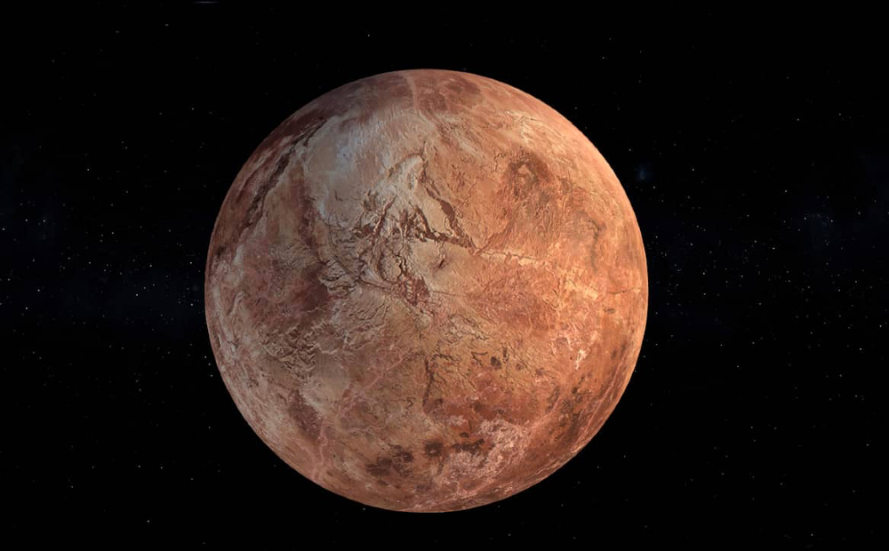

Along with fellow dwarf planets Pluto, Eris and Haumea, Makemake is located in the Kuiper Belt, a region outside the orbit of Neptune. Slightly smaller than Pluto, Makemake is the second-brightest object in the Kuiper Belt as seen from Earth (while Pluto is the brightest). It takes about 305 Earth years for this dwarf planet to make one trip around the sun.
Makemake holds an important place in the history of solar system studies because it—along with Eris—was one of the objects whose discovery prompted the International Astronomical Union to reconsider the definition of a planet and to create the new group of dwarf planets.
Makemake was named after the Rapanui god of fertility.
Structure
Scientists know very little about Makemake's structure.
Size and Distance
With a radius of approximately 444 miles (715 kilometers), Makemake is 1/9 the radius of Earth. If Earth were the size of a nickel, Makemake would be about as big as a mustard seed.
From an average distance of 4,253,000,000 miles (6,847,000,000 kilometers), Makemake is 45.8 astronomical units away from the sun. One astronomical unit (abbreviated as AU), is the distance from the sun to Earth. From this distance, it takes sunlight 6 hours and 20 minutes to travel from the sun to Makemake.
Atmosphere
Makemake may develop a very thin atmosphere, most likely made of nitrogen, near perihelion when it is closest to the sun.
Orbit and Rotation
Makemake takes 305 Earth years to make one trip around the sun. As Makemake orbits the sun, it completes one rotation every 22 and a half hours, making its day length similar to Earth and Mars.
Moons
Makemake has one provisional moon, S/2015 (136472) 1 and nicknamed MK 2. It is more than 1,300 times fainter than Makemake. MK 2 was seen approximately 13,000 miles from the dwarf planet, and its radius is estimated to be about 50 miles (80 kilometers).
Formation
Dwarf planet Makemake is a member of a group of objects that orbit in a disc-like zone beyond the orbit of Neptune called the Kuiper Belt. This distant realm is populated with thousands of miniature icy worlds, which formed early in the history of our solar system about 4.5 billion years ago. These icy, rocky bodies are called Kuiper Belt objects, transneptunian objects, or plutoids.
Potential for Life
The surface of Makemake is extremely cold, so it seems unlikely that life could exist there.